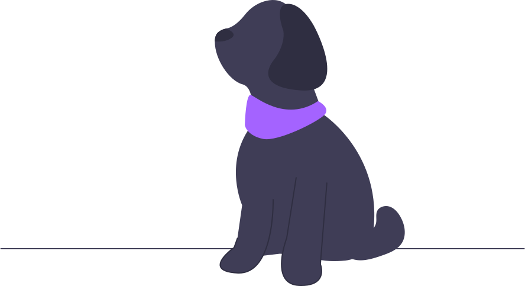

<DOCTYPE html>
<html lang="en">
<head>
     <meta charset="UTF-8">
     <meta name="viewport" content="width=device-width, initial-scale=1.0">
     <title>Waves</title>
    <link rel="stylesheet" href="kamel1.css">
    
    <link rel="preconnect" href="https://fonts.googleapis.com">
<link rel="preconnect" href="https://fonts.gstatic.com" crossorigin>
<link href="https://fonts.googleapis.com/css2?family=Pangolin&display=swap" rel="stylesheet">
<link href='https://unpkg.com/boxicons@2.1.4/css/boxicons.min.css' rel='stylesheet'>

</head>
<body>
    <header>
           <div class="contenedor-textos">
               <h1>
                    Waves para páginas web
               </h1>
               
        </div>
        
       <svg PerserverAspectRatio= "none" 
       class= "Wave"
      
      xmlns="http://www.w3.org/2000/svg" viewBox="0 0 1440 320"><path fill="#fff" fill-opacity="1" d="M0,96L40,133.3C80,171,160,245,240,234.7C320,224,400,128,480,117.3C560,107,640,181,720,202.7C800,224,880,192,960,192C1040,192,1120,224,1200,234.7C1280,245,1360,235,1400,229.3L1440,224L1440,320L1400,320C1360,320,1280,320,1200,320C1120,320,1040,320,960,320C880,320,800,320,720,320C640,320,560,320,480,320C400,320,320,320,240,320C160,320,80,320,40,320L0,320Z"></path></svg>
    <a href='' <i class='bx bxs-ghost bx-burst' style='color:rgba(120,91,216,0.86)' > </i>
    </a>                                                                                                
    </header>
     
  
   
    </body>
    </html>
    